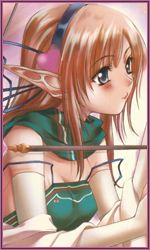

Guildes
Parias d'azeroth
Laurëlïn
Age : Physiquement 19 ans humainsSexe : Femme
Race : Elfe
Faction : Alliance
Formation : Prêtre
Plus d'infos sur Laurëlïn >>>
Lire les 10 récits de Laurëlïn >>>
Nectylia
 Age : 18-19 années humaines
Age : 18-19 années humaines
Sexe : Femme
Race : Elfe
Faction : Alliance
Formation : Chasseur
Description : « Aussi loin que mes souvenirs son, je me revois clairement moi et Arwendil dans linnocence de lenfance , nous avions que deux ou trois années décart je le souviens elle et moi jouant des jours entier à rire aux éclats a travers tout Ashenval.
Nous étions inséparable, notre curiosités étaient sans limite.Je me souviens des après midi ou lont suivaient Ekiou la sur aîné, a travers la foret pour regarder durent des heures les petite fées qui danser autour de la maison Mère et père étais très souvent absent .Maman étais une grande chasseuse, elle fut toujours un exemple pour nous. Père lui étais un elfe de sang sûrement une des raison pour la quelle la maison étais si loin des autres. Lui avait une haine sans nom pour les démons et une passion toute aussi grande pour la magie, tellement quil en venait a nous oublier.Mais peu importe, Arwendil était la pour moi et moi pour elle cétais pour nous le plus important, on ne simaginer pas vivre lune sans lautre. Pourtant un jour emporter dans notre petit jeu de cache cache, nous courrions de partout dans la maison, même si père avait clairement interdit de rentrer dans la tour Arwendil penser que cela ferait une très bonne cachette ! Quand finalement je la découvris emporter dans le jeu sa tête cogna une étagère qui fit tomber une sorte de rune démoniaque la rune briller dune façon étrange et libéras son contenue , le démon prix Arwendil comme logis . Le lendemain , javais un horrible mal de tête , comme si quelqu'un avais soigneusement éponger tout mes souvenirs et les avais remplacer « Dans ma tête Arwendil avais jamais exister Ekiou étais ma seule sur .Le nom que je porter étais différent que celui davant Mon nom étais maintenant Nectylia Vect je portais maintenant le nom de mon père et cela me sembler tout a fait normal Beaucoup de chose avais changer mais javais limpression de toujours avoir vécus comme ca »
Plus d'infos sur Nectylia >>>
Lire les 29 récits de Nectylia >>>
Terrycia
Age : 231Sexe : Femme
Race : Elfe
Faction : Alliance
Formation : Chasseur
Plus d'infos sur Terrycia >>>